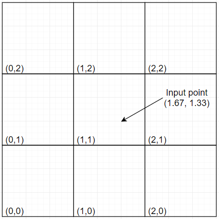
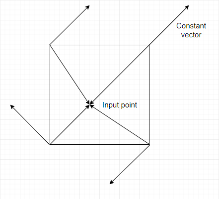
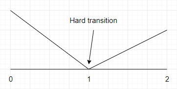
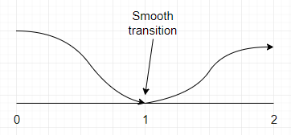
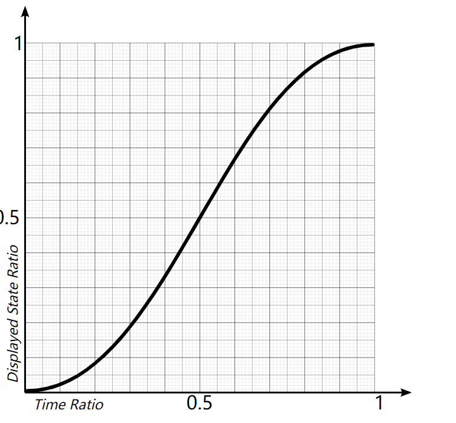
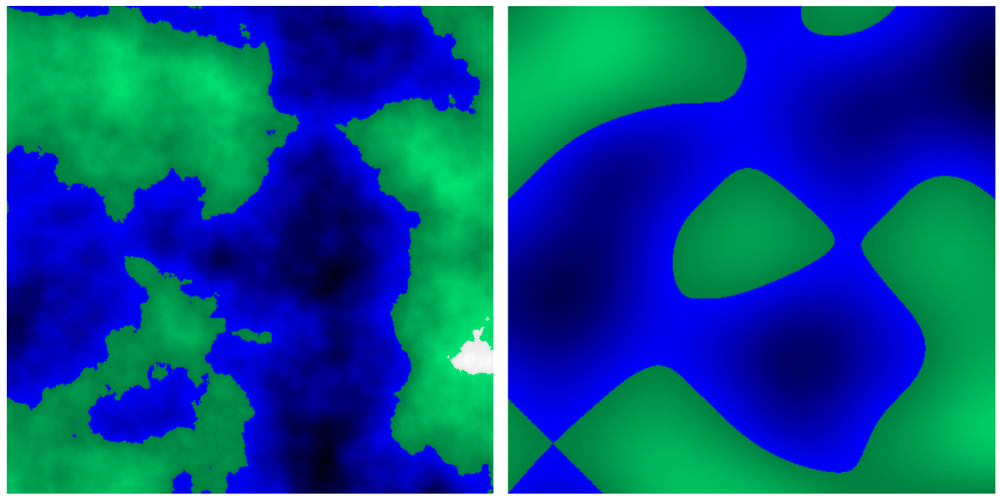
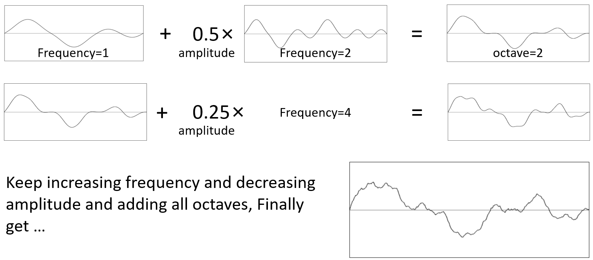

// mapping a 2D position to a random number range from -1 to 1 var perlinValue = PerlinNoise(float x, float y);
for texture: x, y stand for pixel position, but multiplied by a small
number called the frequency
Parameters
frequency of 2D waves
amplitude of 2D waves
octaves: the amount of waves to be generated
persistence: amount of change in size between one curve and the
next
offset: provide variation in the output
height scale: scaling factor to accentuate the output generated
Property if 2 inputs are near to each other, the
results of the noise function will be near to each other too.
guarantee continuity
Generation
given a 2D grid as following, the input of Perlin noise is each
pixel.

1695262810353
assign each gird point a random constant vector. (note:
gridVector[4])
get the vectors pointing from the grid point to the input
point(target pixel). (note: inputVector[4])
for each of the 4 corners of the square where the target pixel lies,
calculate the dot products:
for i in range(4): calculate dot(gridVector[i], inputVector[i])
the dot product means the effects corners value to target
pixels

1695264135606
interpolate between those 4 values and the result is the value of
the target pixel.
difference between Perlin noise and value noise: Perlin noise use
dot product between 2 vectors to get 4 corners' values
while value noise use a pseudo-random number.
Discussion
gradient constant vectors
why we need permutation table(noted as P) &
gradient table(noted as G): P is used to
select a random gradient from G. P provides randomness and
repeatability(???)4
how to generate a permutation table: the core is
double and shuffle. we have known that permutation
table is used to select a gradient from gradient table and one gradient
is defined by (x,y) (which is the grid point position). so one tuple
(x,y) defines one permutation value. so the size of permutation table is
\(len(X)\times len(Y)\)
(double). to guarantee the randomness, we can do shuffle for
\(0-255\). the code to generate
permutation table is (where \(len(X) =
len(Y)\)):
1 2 3 4 5 6 7 8 9
var permutationTable = newint[2 * len(X)]; for (var i = 0; i < len(X); i += 1) permutationTable[i] = i; permutationTable = Shuffle(permutationTable); for (var i = 0; i < len(X); i += 1) permutationTable[len(X) + i] = permutationTable[i]; // visit the table given (x,y) var valueTopRight = P[P[x+1]+y+1]; var valueTopLeft = P[P[x]+y+1]; var valueBottomRight = P[P[x+1]+y]; var valueBottomLeft = P[P[x]+y];
how to generate a gradient table: use 4 constant
vectors: \((1f,1f), (1f, -1f), (-1f, 1f),
(-1f, -1f)\). so just do modulo with the permutation value given
(x,y) can get one gradient vector.
how to interpotate between such 4 values: 4 values
(a1,a2,b1,b2), firstly interpolate between a1 and a2 which produces v1,
secondly interpolate between b1 and b2 which produces v2, finally
interpolate v1 and v2 which produces v, the interpolated value.
which interpolation function should be used: if we
use linear interplation to get our \(t\) in \(v_p =
a_1 + t (a_2 - a_1)\), there will be a "hard transition" between
3 points (x=0,1,2, while y=2,0,1.5)

1695314437553
but if we use an unlinear method, it will be smoothed

1695314441924
the normally used interpolation function is \(6t^5 - 15t^4 + 10t^3\), the image is:

1695314653794
frequency
what dose frequency means in Perlin noise: consider
this situation: what is the interpolate value when our target pixel
happens to be the bottom left grid point? ZERO. because the inputVector
is zero and thus all dot products are zero. to solve ths issue, we
generallt multiply the inputs target pixel by a small value called
frequency.
amplitude
what dose amplitude means in Perlin noise: this
will be used in following section. amplitude is the multiplier before
one item.
octave
what dose octave means in Perlin noise: this will
also be used in following section. when one layer has a frequency that
is double the frequency of the previous layer, this layer is called an
octave.
More?
FBM: Fractal brownian motion

1695315613281
obviously, the left is better.
the left image uses FBM to simulate the terrains in real world.
but...how?

1695317070446
so the high frequencies and low amplitudes generate more details
than just one single layer, we can keep changing the frequencies and
amplitudes in a for-loop, and add them together.
Post title: 【PCG】Perlin Noise
Post author: Andrew-Rey
Create time: 2023-09-21 00:25:23
Post link: 2023/09/21/Unity/PerlinNoise/
Copyright notice: All articles in this blog are licensed under BY-NC-SA unless stating additionally.